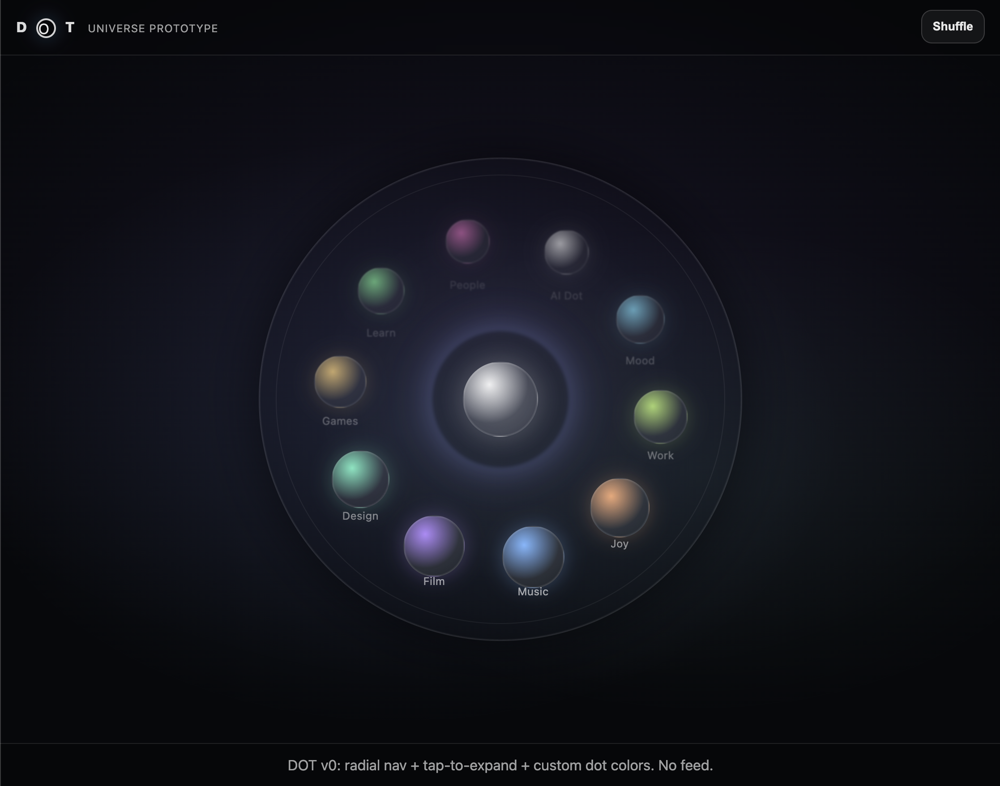
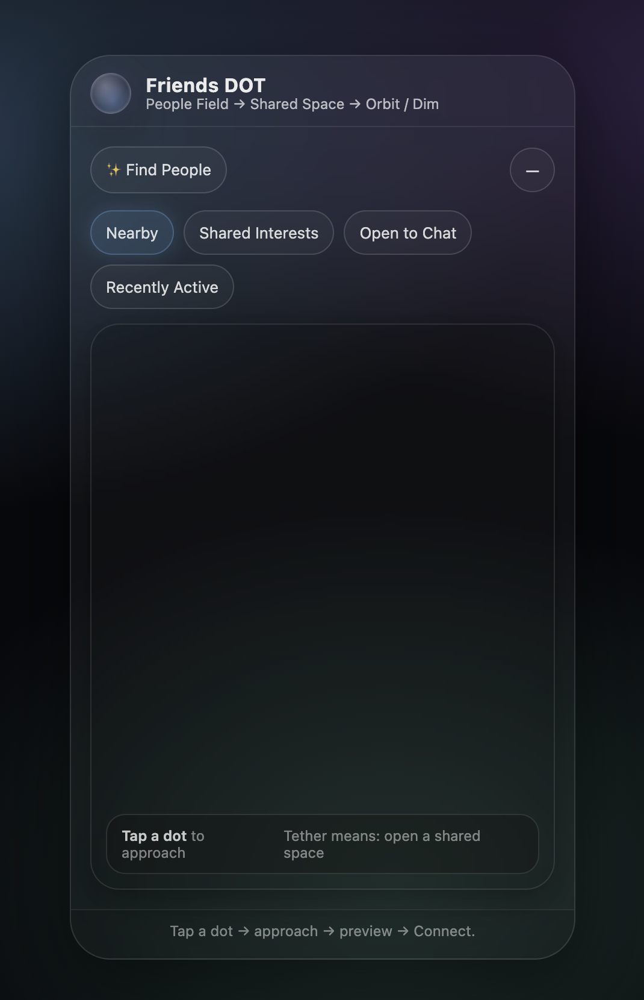

Case Study
DOT (Flagship)
DOT is a flagship concept exploring how radial navigation, intentional interaction, and AI-aware safeguards can support a healthier alternative to infinite scroll.
Overview
DOT is a systems-first concept for a social experience built around presence, agency, and deliberate exploration. Instead of organizing interaction around feeds, metrics, and passive scrolling, DOT uses a radial model that centers the user and turns navigation into a conscious act.
The Problem
Most modern digital platforms are optimized for retention, not intention. Infinite scroll, algorithmic feeds, and engagement metrics encourage passive consumption and fragmented attention. Users lose agency over how they spend time, often describing their experience as draining or automatic.
The challenge was to explore whether navigation itself could influence behavior by shifting users away from feed-based consumption and toward a more deliberate, user-controlled interaction model.
Goals
- Replace mindless scrolling with deliberate, user-controlled navigation.
- Create a social experience that rewards coherence, not validation loops.
- Design AI-aware safeguards that support autonomy and safety.
Key Insights
Low-friction systems shape behavior
Reducing friction matters, but DOT uses friction strategically to increase intention.
Sharing ≠ validation
DOT explores sharing inside smaller, curated circles to reduce social pressure.
Safety must be built-in
Safeguards work best when they’re transparent, optional, and non-intrusive.
Users want coherence
Design can reduce distortion by nudging toward clarity, reflection, and choice.
Interaction Model
Instead of a vertical feed, DOT centers the user within a radial interface designed to make exploration feel chosen rather than automatic.
- A central User Dot anchors the experience around identity, agency, and personal space.
- Orbiting interest nodes replace scrolling categories with intentional entry points.
- Users rotate or tap nodes to explore rather than passively consume.
- Focus mode dims surrounding elements to reduce distraction and reinforce deliberate choice.
This system reframes exploration as a conscious action rather than a reflexive scroll. Early usability testing suggested that users intuitively interacted with the center dot without instruction, pointing to strong affordance clarity.
Center Dot
Personal hub—identity, intent, and a curated home space.
Orbit Dots
Interest-based portals such as People, Music, and Learn that invite intentional entry.
Design Exploration


Prototype
I translated the concept into a lightweight HTML, CSS, and JavaScript prototype to test layout, motion, interaction states, and navigation behavior before a deeper build. This helped move the project beyond static frames and into real interface behavior.
Back to WorkOutcomes
DOT helped me explore how product structure can shape behavior before content ever does. The project clarified my interest in systems-first UX, intentional interaction models, and front-end experimentation as part of the design process.
It also gave me a working framework for thinking about healthier digital environments: reduce passive loops, increase visible choice, and design safeguards that support autonomy without becoming intrusive.
What I’d test next
- Radial navigation comprehension: Can new users predict what dots do without explanation?
- Intentional sharing: Does a smaller circle reduce validation-seeking behavior?
- AI safeguards tone: Does the AI Dot feel helpful vs intrusive?